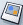

Creating Web Pages with Netscape Composer
Creating a New Page
Netscape Composer is an HTML (HyperText Markup Language) editor that allows you to create and edit web pages.
Composer is WYSIWYG (What You See Is What You Get) editor, so you can see how your page will look to the reader as you're creating it. It's not necessary for you to know HTML, since most of the basic HTML functions are available as commands from the toolbars and menus.
To create a web page, use one of the methods described below. Once you've
started a page, you can add and edit text just as you would in a word processor.
To create a new page:
- Open the Tasks menu and choose Composer. A Composer window containing a blank page opens.
To edit a page you're currently browsing in Navigator:
- In the Navigator window of the page you're viewing, open the File menu and choose Edit Page.
You see a Composer window that contains the page you're viewing.
To start from an HTML file stored on your local drive:
- Open the Tasks menu and choose Composer.
- Open the File menu and choose Open File.
- Locate the file on your hard drive that you want to use.
- Click Open to see the specified file in a Composer window.
To edit a Web page:
- Open the file menu and choose Open Web Location.
- In the Open Web Location dialog box, type the URL of the page (for example, www.netscape.com), and then select New Composer from the pop-up menu.
- Click Open to view the page in a Composer window.
Note: Keep in mind that when you save this page, it will only be saved on your hard drive.
Tip: In the Composer window you can quickly open the most recent files you've been working on by opening the File menu, choosing Recent Pages, and then selecting the file you want from the list.
[ Return to beginning of section ]
Choosing the Right Editing Mode
Composer allows you to quickly switch between four editing modes or views. Each editing mode allows you to continue working in your page, but displays varying levels of HTML tags (and tag icons).
Before you choose an editing mode:
- Open the View menu and make sure there's a check mark next to Edit Mode Toolbar.
The Edit Mode toolbar has four tabs:
- Normal: Choose this mode to show table borders and named anchor icons. All other HTML tag icons are hidden.
- Show All Tags: Choose this mode to show table borders and all HTML tag icons.
- HTML Source: Choose this mode to see the page as unformatted HTML code.
- Edit Preview: Choose this mode to see the page as it would appear in a browser window.
Note: JavaScript functions, frames, and animated gif files are not enabled in any of the editing modes.
[ Return to beginning of section ]
Saving and Browsing Your New Page
To save a new page as an HTML file on your local drive:
- Open the File menu and choose Save. If you haven't already given your page a title, Composer prompts you to do so.
You see a dialog box where you can specify a filename or location. You don't need to add the .html extension to the filename; Composer adds it for you.
- Choose Save As if you want to give the page a different filename or location.
Tip: Choose Revert to Last Saved from the File menu to retrieve the most recently saved copy of the document in which you're working. Keep in mind that your current changes will be lost.
To view your page in a Navigator (browser) window in order to test your links:
- Open the File menu and choose Browse Page.
If you have not yet saved your document, Composer prompts you to enter a page title, filename, and location.
The Composer window remains open behind the new Navigator window.
[ Return to beginning of section ]
Formatting Your Web Page
Formatting Paragraphs, Headings, and Lists
To apply a format to a paragraph:
- Place the pointer where you want the format to begin and click, or highlight the paragraph(s) you want to format.
- Open the Format menu and choose Paragraph.
- Select one of the following formats:
- Body Text: Applies the application default font and style for regular text, without affecting the spacing before or after the text.
- Paragraph: Inserts a paragraph tag (use this to begin a new paragraph). The paragraph format applies to the spacing before and after the paragraph.
- Address: This format can be used for a web page "signature" that indicates the author of the page and the person to contact for more information, as in this example: Carlos_Goldstein@netscape.com
You might want to include the date and copyright notice. This format usually
appears at the bottom of the web page under a horizontal line. Composer displays address format in italics.
- Preformatted: This is useful for elements such as code examples,
column data, and mail messages that you want displayed in a fixed-width font.
Most browsers remove extra spaces, tabs, and paragraph returns in your text.
However, text that uses the Preformatted style is displayed with the white
space intact, preserving the layout of the original text.
- Blockquote: Choose this format to indent quoted text on both the left and right.
To apply a heading format:
- Place the pointer where you want the format to begin and click, or highlight the text you want to format.
- Open the Format menu and choose Paragraph.
- Choose the level of heading you want, from 1 to 6 (largest to smallest). For example, choose "Heading 1" for your main heading, "Heading 2" for the next level, and so forth.
To apply a list item format:
- Highlight the text you want to format.
- Open the Format menu and choose List.
- Choose the list style:
- Bulleted: Each Item has a bullet (dot) next to it (as in this list).
- Numbered: Items are numbered.
- Term and Definition: These two styles work together, creating two columns such as for a glossary.
Use the Term tag for the word being defined, and the Definition style for the definition.
The Term text appears flush left, and the Definition text appears indented.
Tip: You can quickly apply a list style to text by selecting the text and clicking the Numbered List  and Bulleted List buttons on the toolbar.
and Bulleted List buttons on the toolbar.
To change the style of bullets or numbers:
- Click to place the pointer within the text of the list item you want to change.
If you want to change the entire list, select the whole list.
- Open the Format menu and choose List Properties.
- Choose a bullet or number style from the pop-up menu. For numbered lists, also specify a starting number.
If it is a bulleted list, you can change the bullet style.
To align a paragraph or text in your page, for example, centering or aligning to the left or right:
- Place the pointer in the paragraph or line of text you want to align.
- Open the Format menu and choose Align; then choose an alignment option.
Or choose the alignment option from the formatting toolbar.
[ Return to beginning of section ]
Changing Text Color, Style, and Font
To change the style, color, or font of selected text:
- Highlight the text you want to format.
- Open the Format menu and choose one of the following:
- Font: Use this to choose a font. If you prefer to use
fonts specified by the reader's browser, select Variable Width or Fixed Width.
Note: Not all fonts installed on your computer appear.
Instead of specifying a font that may not be available to all who view your web page,
it's generally best to select one of the fonts provided in the menu because those fonts work on every computer
- Size: Use this to choose a relative font size or select an option to
increase or decrease text size (relative to the surrounding text).
- Text Style: Use this to select a style, such as italic, bold, or underline, or apply an object identifier, for example, Code.
- Text Color: Use this to choose a color from the color picker. If you are familiar with HTML color codes, you can type a specific code.
You can also change the background color of the page, or use an image as a background. See Setting Page Colors and Backgrounds.
Tip: To quickly remove all formats from selected text, open the Format menu and choose Discontinue Text Styles.
[ Return to beginning of section ]
Finding Text in a Page
To look for text in the page you're currently working on:
- Open the Edit menu and choose Find.
- In the Find in this Page dialog box, type the text you want to locate. To narrow the search, check one or more of the following options:
- Match upper/lower case: Use this to specify whether the search is for both uppercase
and lowercase text. For exact matches, leave this option unchecked.
- Wrap around: Use this to search to the end of the page and then start again
from the top.
- Search backwards: Use this to search from the end to the beginning of the page.
- Click Find to begin searching. When Composer locates the first occurrence of the text, choose Find Again from the Edit menu to search for the next occurrence.
[ Return to beginning of section ]
Inserting Horizontal Lines
To add a horizontal line (also called a rule) to your page:
- Place the pointer where you want the line to appear.
- Click the H. Line button on the toolbar, or open the Insert menu and choose Horizontal Line.
Setting Horizontal Line Properties
You can customize a line's height, length, width, alignment, and shading.
- Double-click the line to select it.
- Open the Format menu and choose Horizontal Line Properties.
- Edit these properties:
- Width: Choose a measurement unit (pixels or percentage) and type a number for the width.
- Height: Type a number for the line's height (in pixels).
- 3-D Shading: Click this to add depth to the line with a drop shadow.
- Alignment: Specify where you want to place the line.
- Click Save Settings to use these settings as the default for all horizontal lines.
Inserting Special Characters
To insert characters such as symbols or accented letters:
- Place the pointer where you want the special character to appear.
- Open the Insert menu and choose Characters and Symbols.
- Choose a category of characters.
- If you choose Accent Uppercase or Accent Lowercase, then open the Letter pop-up menu and choose the letter you wish to apply an accent to. (Note: not all letters have accented forms.)
- From the Character pop-up menu, choose the character you want to insert.
- Click Insert and then close.
[ Return to beginning of section ]
Inserting HTML Elements and Attributes
If you understand HTML source code, you can insert additional tags, style attributes, and JavaScript
into your page. To work with HTML code use one of these methods:
- Place the pointer where you want to insert the HTML code, then open the Insert menu and choose HTML.
The Insert HTML dialog box appears.
- Click the HTML Source tab in the Edit Mode toolbar at the bottom of the Composer window. (If you don't see the Edit Mode toolbar, open the View menu and choose Toolbars; then make sure Edit Mode Toolbar is checked.)
- Select an element such as a table, named anchor, image, link, or horizontal line. Double-click the element to open the Properties dialog for that item. Click Advanced Edit to open the Advanced Property Editor.
Using the Advanced Property Editor
To add attributes and JavaScript to objects such as tables, images, and horizontal lines,
use the Advanced Property Editor:
- Select the object you want to modify and then open its Properties dialog box. For example, to modify a horizontal line, double-click the line to select it; then open the Format menu and choose Horizontal Line Properties.
- In the Properties dialog box, click Advanced Edit.
The Advanced Property Editor dialog box has three tabs, each of which lists the current properties for the selected object:
- HTML attributes: Click this tab to view or enter additional HTML attributes.
- Inline Style: Click this tab to view or enter additional stylesheet properties through the <style> attribute.
- JavaScript Events: Click this tab to view or enter JavaScript events.
- To edit a property or attribute currently in the list, click the name and enter a different value in the field.
- To add a property, type the Name, enter the corresponding value, and then click Add.
- Click OK to confirm your changes, and then click OK again to exit the Properties dialog box.
Composer automatically places opening and closing brackets < and > around your HTML, and quotation marks around any attribute text.
Caution: Composer does not validate attributes that you enter. Make sure you fully understand the rules before adding, deleting, or modifying any values.
[ Return to beginning of section ]
Checking the Spelling
To check the spelling of your page:
- Place the pointer in the page.
- Click the Spell button on the toolbar, or choose Check Spelling from the Edit menu.
- Use the Check Spelling dialog box to correct misspellings and to edit or
add words to the current dictionary. Click Stop when you are done.
- Ignore and Ignore All: Click to continue checking without changing the word, or all occurrences of the word).
- Change and Change All: Click to replace the word, or all occurrences of the word.
- Add Word: Click to add the word to the dictionary.
- Edit: Click to add, replace, and remove words from the User Dictionary.
- Recheck: Click to reset the spelling checker and recheck words.
[ Return to beginning of section ]
Adding Tables to Your Web Page
Inserting a Table
Tables are useful for organizing text, pictures, and data into formatted rows and columns. To insert a table:
- Place the pointer where you want the table to appear.
- Click the Table button
 on the toolbar, or choose Table from the Insert menu.
You see the New Table Properties dialog box, where you can specify properties for the table (for example, height, width, and background color).
on the toolbar, or choose Table from the Insert menu.
You see the New Table Properties dialog box, where you can specify properties for the table (for example, height, width, and background color).
- Type the number of rows and columns you want.
- Enter a number for the height and width (in pixels).
- Enter a number for the border thickness; enter zero for no border. Note: Composer uses a red dotted line to indicate tables with a zero border; the dotted line disappears when the page is previewed or browsed.
- To apply additional table attributes or JavaScript,
click Advanced Edit to display the Advanced Property Editor.
- Click OK to confirm your settings and view your new table.
To edit and add additional properties to your new table, click inside the table and then choose Table Properties from the Format menu (or click the Table button in the toolbar).
[ Return to beginning of section ]
Changing a Table's Properties
You can modify properties that apply to an entire table as well as the rows, columns, or individual cells within a table.
To view, change, or add properties for a table (for example, caption, background color, and spacing):
- Select the table, or click anywhere inside it.
- Click the Table button on the toolbar, or open the Table menu and choose Table Properties. You see the Table Properties dialog box with two tabs: Table and Cell.
- Click the Table tab to edit these properties:
- Size: Use this to specify the number of rows and columns.
Indicate the height and width of the table and then choose "% of window"
or "pixels." If you specify height or width as a percentage, the table's
height or width changes whenever the Composer window's or browser window's height or width changes.
- Borders and Spacing: Use this to specify, in pixels, the
border line width, the space between cells, and the cell padding (the
space between the contents of the cell and its border). Note:
Composer uses a dotted outline to display tables with a zero border;
the dotted line disappears when the page is viewed through a browser.
- Table Alignment: Use this to align the table within the page. Choose an option from the pop-up menu.
- Caption: Check the box if you want to insert space for a caption and then choose a placement from the pop-up menu.
- Background Color: Use this to choose a color for the table background, or leave it
as transparent. If you want to use an image file as the table's background,
check the box at Image and then enter the filename and location.
- Note: To apply additional attributes or JavaScript events, click Advanced Edit to display the Advanced Property Editor
- Click Apply to preview your changes without closing the dialog box, or click OK to confirm them.
To view, change, or add properties for one or more cells:
- Select the row, column, or cell, then open the Table menu and choose Table Properties.
- Click the Cells tab to edit the following properties:
- Selection: Choose Cell, Row, or Column from the pop-up menu. Click Previous or Next to move through rows, columns, or cells.
- Size: Type a number and then choose "% of table" or "pixels." Type a number at "Span" to specify the number of rows or columns the selected cell overlaps.
- Content Alignment: Choose a horizontal or vertical alignment type (top, left, or center) for the text or data inside each cell.
- Cell Style: Choose Header from the pop-up menu to center and bold the text in the cell; otherwise choose Normal.
- Text Wrap: Choose "Don't wrap" from the pop-up menu to keep text from wrapping to the next line unless you insert a paragraph break. Otherwise, choose Wrap.
- Background Color: Choose a color for the cell background or leave it as transparent.
Note: To apply additional attributes or JavaScript events, click Advanced Edit to display the Advanced Property Editor
- Click Apply to preview your changes without closing the dialog box, or click OK to confirm them.
[ Return to beginning of section ]
Adding and Deleting Rows, Columns, and Cells
Composer allows you to quickly add or delete one or more cells to your table.
In addition, you can set options that allow you to maintain the original rectangular structure or layout of the table while you perform editing tasks.
To add a cell or group of cells (rows and columns) to your table:
- Click inside the table where you want to add a cell (or cells).
- Open the Table menu and then choose Insert.
- Choose one of the cell groupings. You can also insert a new table within a table cell.
To delete a cell or group of cells:
- Click a row, column, or cell.
- Open the Table menu and choose Delete.
- Choose the item you want to delete.
To join (or merge) a cell with the cell on its right:
- Click inside the cell, open the table menu, and choose Join with Cell to the Right.
To split a joined cell back into two cells:
- Click inside the cell, open the Table menu, and then choose Split Cell.
Correcting the Table Layout
Generally, when you delete one or more cells, Composer removes the cell border as well. This can result in a table with empty spaces, or whose outline appears irregular due to an uneven number of cells. You may want to delete one or more cells but still maintain the table's original rectangular layout, or structure.
Composer allows you to set a preference for preserving the table's structure by adding cells at the end of a row, wherever needed:
- Open the Edit menu, choose Preferences and then choose Composer.
Set the preferences you want in the Table Editing section.
You can choose to allow the Delete key to remove an entire cell or just remove the cell's contents.
[ Return to beginning of section ]
Moving Around a Table
You can use one of two ways to quickly select a table, cell, or group of cells:
- Open the Table menu, choose Select, and then select an item from the submenu.
- Or, you can use the mouse as a selection tool:
- To select the content inside one or more cells, click inside the cell and drag the mouse to highlight the number of cells you want. You can apply a
text format (for example, text style or color) to the selected content.
- To select a group of contiguous cells: click in a cell, then press Ctrl
(or Cmd) and drag the mouse to highlight the number of cells you want.
Drag the mouse left or right to select a row; up or down to select a column.
- To select non-contiguous cells: press Ctrl (or Cmd) and then click inside the cell. Keep pressing Ctrl (Cmd) as you click to select additional cells.
- To move a group of selected cells: press Ctrl-Shift (or Cmd-Shift) and drag the mouse to highlight the cell(s).
[ Return to beginning of section ]
Moving, Copying, and Deleting Tables
- Click inside the table, open the Table menu, then choose Select Table.
- To copy or move the table use the Edit menu's cut, copy, and paste options.
- To delete the table, open the Table menu, then choose Delete Table.
[ Return to beginning of section ]
Adding Pictures (Images) to Your Web Page
Inserting an Image into Your Page
You can insert GIF and JPEG images into your web page. You can also use them to create links.
- Place the pointer where you want the image to appear.
- Click the Image button  on the toolbar, or open the Insert menu and choose Image.
- Specify the image filename and location and, if needed, adjust the settings in the Image Properties dialog box.
Tip: To quickly insert an image: Drag and drop it onto your page.
[ Return to beginning of section ]
Editing Image Properties
Once you've inserted an image into your page, you can edit its properties and customize the layout in your page, such as the height, width, spacing, and text alignment:
To edit the properties for a selected image:
- Double-click the image, or select it and click the Image button on the toolbar.
You see the Image Properties dialog box; click More Properties to expand the list of settings. To collapse the list of properties, click Fewer Properties.
- Image URL: Type the filename and location of the image file. Click
Choose File to search for an image file on your hard drive or network.
- Alternate Text: Enter text that will display in place of the
original image; for example, a caption or a brief description of the
image. It's a good practice to specify alternate text for readers who
use text-only web browsers or who have graphics turned off. Otherwise,
your readers might see placeholder images.
- Dimensions: Click Custom Size, then specify the new height and width, in pixels.
This setting doesn't affect the original image file, just the image inserted in your page.
Click Original Size
to undo any changes you've made to the dimensions.
- Constrain: If you change the image size, it's a good idea to check
this in order to maintain the image's aspect ratio (so that it doesn't
appear distorted).
- Align Text to Image: If you've placed your image next to any text,
select an alignment icon to indicate how you want text positioned relative
to the image. Tip: To see the effects of alignment changes you've made,
it's a good idea to view your page in a browser window.
- Spacing: Specify the amount of space surrounding the image; between the image and adjoining test.
You can also put a solid black border around the image and specify
its width in pixels. Specify zero for no border.
- To create hotspots in your image that contain hyperlinks, click Edit Image Map to use Composer's Image Map Editor.
- Note: To apply additional attributes or JavaScript events, click Advanced Edit to display the Advanced Property Editor.
- Click OK to confirm your changes.
[ Return to beginning of section ]
Creating Image Maps (Hotspots) for Your Images
Using Composer's Image Map Editor you can create a hotspots to map areas of an image.
A map file indicates the image's hotspots--coordinates of the various areas of the image that you can assign to URLs.
The Image Map Editor works like a drawing tool--the selected image is displayed in a window area, with shape tool buttons located on the toolbar at the left side of the window.
To use the Image Map Editor:
- Select the image in your page.
- Click the Image button in the toolbar to display the Image Properties dialog box, then click the Edit button in the Image Map section. (If necessary, first click More Properties to expand the dialog box.)
- Use the shape tools to select portions of the image that you can then designate as hotspots that contain URLs or named anchors. First click the tool button, then click and drag inside the image to define the selection.
- Rectangle: Use this tool to define a rectangular selection.
- Circle: Use this tool to define a circular or oval selection.
- Polygon: Use this tool to define a geometric selection.
Once you've defined an area, you see the Hotspot Properties dialog box, where you can enter either a URL or the name of an anchor (target) as the destination (jump-to location) of the link.
- When you've finished designating hotspots, click OK, and then click OK again to confirm your changes.
- To test the links in your image, save the page, and then click Browse to see the page in the Navigator browser.
To remove the image map from an image:
- Select the image you want.
- Open the Image Properties dialog box, and then click Remove Image Map. (If necessary, first click More Properties to expand the dialog box.)
- Click OK to confirm your changes.
[ Return to beginning of section ]
Setting Page Properties
Setting Page Properties and Meta Tags
Use the Page Properties dialog box to enter properties such as the title, author and description of the document you're currently working on. This information is useful if you plan to use the page on a web site, since search engines use this type of information to index your page.
- Open the Format menu and choose Page Title and Properties.
You can edit these properties:
- Location: The filename and location of where the document is saved.
- Title: Type the text you want to appear as the window title when
someone views the page through a browser. This is how most web search tools
locate web pages, so choose a title that conveys what your page is about.
- Author: Type the name of the person who created the document. This information is helpful to readers who find your document by using a web search tool.
- Description: Enter a brief description of the document's contents.
[ Return to beginning of section ]
Setting Page Colors and Background
You can change the background color or specify a background image for the page you're currently working on. These choices affect the way text and link elements in your page appear to people viewing the page through a browser.
To set the colors and background for the current page:
- Open the Format menu and choose Page Colors and Background.
You can edit these properties:
- Reader's default colors: Select this if you want your page to use the color settings from the viewer or reader's browser for text and link elements.
- Use custom colors: Select this if you want to specify the colors of text and link elements. For each element, select a color from the drop-down list. Sample output for each element appears in the pane on the right.
- Background image: Select this if you want the background of your page to be an image.
Type the name of the image file or click Choose File to locate the image file on your hard drive or network. Uncheck the box if you prefer to not load the image while you're working on the page (the filename and location will still appear).
Note: Background images are tiled and override background color selections.
- Note: To apply additional attributes or JavaScript events, click Advanced Edit to display the Advanced Property Editor.
You can also set the default page background and colors for every new page you create in Composer.
[ Return to beginning of section ]
Creating Links
Creating Links Within the Same Page
To create a link within the same page, for example a link that the reader can use to jump from one section to another, you must create an anchor, and then create a link that points to the anchor. Anchors are also called named anchors or targets.
- Place the pointer at the beginning of a line where you want to create an anchor, or select some text.
- Click the Anchor button
 on the toolbar, or open the Insert menu and choose Named Anchor.
on the toolbar, or open the Insert menu and choose Named Anchor.
- Type a name for the anchor in the dialog box (up to 30 characters). Don't include spaces. If you need to, use an underscore "_" to separate words.
If you selected some text in step #1, this box already contains a name.
- Click OK.
An anchor icon appears in your document to mark the anchor's location:
To create the link that the reader can click to jump to the anchor:
- Select the text or image that you want to link to the anchor.
- Click the Link button or open the Insert menu and choose Link.
- To see a list of all named anchors and headings in the page, click More Properties.
- Use the Link Properties dialog box to choose the appropriate anchor name.
- Select a named anchor: Use if you're creating a link to a named anchor (target), select from a list of the anchors currently available in the page.
- Select a Heading: Use if you're creating a link to a level heading
(for example, Heading 1 - Heading 6), select from a list of headings currently available in the page.
- Click OK.
- To test the link you just created, open the File menu and choose Browse Page, then click the link.
[ Return to beginning of section ]
Creating Links to Other Pages
You can create links from your page to local pages on your own computer or on your workplace's network, or to remote pages on the Internet.
You can quickly create a link by dragging and dropping it from other windows. For example, you can highlight a link from a web page, bookmark, or mail and news window and drag and drop it onto your page.
You can also use the Link Properties dialog box to create a link to another page:
- Select the text or image that you want to link to the anchor.
- Click the Link button.
- To see a list of all named anchors and headings in the page, click More Properties.
- Use the Link Properties dialog box to define your link.
- Link text: Type the text you want to use as the link to another page or anchor. If you've already selected an image file or text, you see it here.
- Link to: Type the local path and filename or remote URL of the page you want to link to.
If you're not sure of the path and filename or a local file, click Choose File to look for it on your hard disk or network.
For remote URLs, you can copy the URL from the browser location field.
- Note: To apply additional attributes or JavaScript events, click Advanced Edit to display the Advanced Property Editor.
- Click OK.
- To test the link you just created, open the File menu and choose Browse Page, then click the link.
[ Return to beginning of section ]
Using Images as Links
You can make images, pictures, and graphic files, such as JPEG or GIF files, behave like links in your pages. When the reader clicks a linked image, the browser window displays the page that the image is linked to.
- Select an image on your page.
- Click the Link button
 on the toolbar, or open the Insert menu and choose Link.
on the toolbar, or open the Insert menu and choose Link.
- Use the Link Properties dialog box to link the image to a named anchor or heading within the page, or to a
separate local or remote page.
Tip: Drag and drop a linked image from the Navigator window into a Composer window to copy both the image and the link.
[ Return to beginning of section ]
Removing Links
To remove a link:
- Select the linked text (normally blue and underlined) or image.
- Open the Format menu and choose Remove Link.
[ Return to beginning of section ]
Setting Composer Preferences
Composer Preferences
To set general preferences, for example, table editing, that apply to every document you create:
- Open the Edit menu and choose Preferences; then click the Composer category.
You can set these defaults:
- Maximum number of pages listed: Specify the number of pages that appear under Recent Pages in the File menu.
- Maintain source formatting: Select this if you don't want Composer to remove white space (extra lines, tabs, etc.) that makes the HTML code more readable. This preference does not affect how your pages appear in a browser window.
- Maintain table layout when inserting or deleting cells: When you delete one or more cells, Composer removes the cell border as well, which can result in a table with empty spaces, or an outline that appears irregular due to an uneven number of cells. Check this if you want Composer to always preserve the table's layout (that is, keep it in a rectangular shape) by adding cells where needed.
- Delete key: Choose the action you want the Delete key to take on selected cells in tables.
[ Return to beginning of section ]
Setting Preferences for Colors and Background Images
You can set preferences that apply to every document you create.
- Open the Edit menu and choose Preferences.
- Open the Composer category and click New Page Settings.
You can set these defaults:
- Author name: Enter your name.
- Default page colors: Select this if you always want your pages to
use the color settings from the viewer (reader's) browser for text and
link elements.
- Use custom colors: Select this if you always want to specify the
colors that are applied to text and link elements. Then for each element,
select a color from the drop-down list.
- Background image: Type the name of an image file, or click Choose
File to locate the image file on your hard disk or network. Note:
Background images are tiled and override background color.
To change the author name for an individual page: Open the Format menu and choose Page Title and Properties.
To change the page colors and background image for an individual page: Open the Format menu and choose Page Colors and Background.
[ Return to beginning of section ]
10/12/00
Copyright 1994-2000 Netscape Communications Corporation.